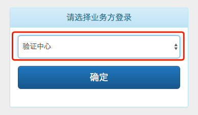

说明：获得了正式业务方权限，接下来怎么做呢？
1.已经完成了正式权限申请、获得了正式业务方权限，接下来怎么做呢？
你还需要操作9步～～这样做👇👇👇
业务接入后全部是空数据首先需要进行 策略部署/规则部署，包括创建参数、创建因子、创建规则，创建决策，创建场景，有了以上因素后，完成最终的场景配置，场景配置包括规则、决策、状态和优先级。
2.都怎么创建？
第一步：登录Zeus
- 线上（生产环境）：https://zeus.sankuai.com
- 线下（测试环境）：http://zeus.mis.rc.test.sankuai.com
⚠️数据不能跨环境迁移，即测试环境数据和生产环境数据隔离，需要配置两次哦～～（技术难题呀）
第二步：选择邮件中的业务名称

下拉选择即可
第三步：创建参数 说明：创建/修改参数
第四步：创建因子 说明：创建/修改因子
第五步：创建规则 说明：创建/修改规则
第六步：创建决策 （废弃）说明：创建/修改决策
第七步：创建场景 说明：创建/修改场景
第八步：完成场景配置 说明：添加场景配置、让规则在场景中生效说明：规则在场景中生效
规则在场景配置中的生效、标记、灰度和离线状态说明：
生效：规则在场景配置中为生效状态，则该条规则逻辑会正常执行，且在业务侧可获取到决策信息；
灰度：规则在场景配置中为灰度状态，则该条规则逻辑会正常执行，且在业务侧可获取到满足灰度比例设定流量的决策信息，不满足灰度比例设定流量的信息，业务侧获取不到相关的决策信息；
标记：规则在场景配置中为标记状态，则该条规则逻辑会正常执行，但在业务侧获取不到相关的决策信息；
离线：规则在场景配置中为离线状态，则该条规则逻辑不会执行；
第九步：业务调用 说明：Zeus在线服务RPC接入文档（适用于RD）
恭喜您，已经掌握了核心技巧了，更多功能介绍：01 Zeus帮助文档汇总